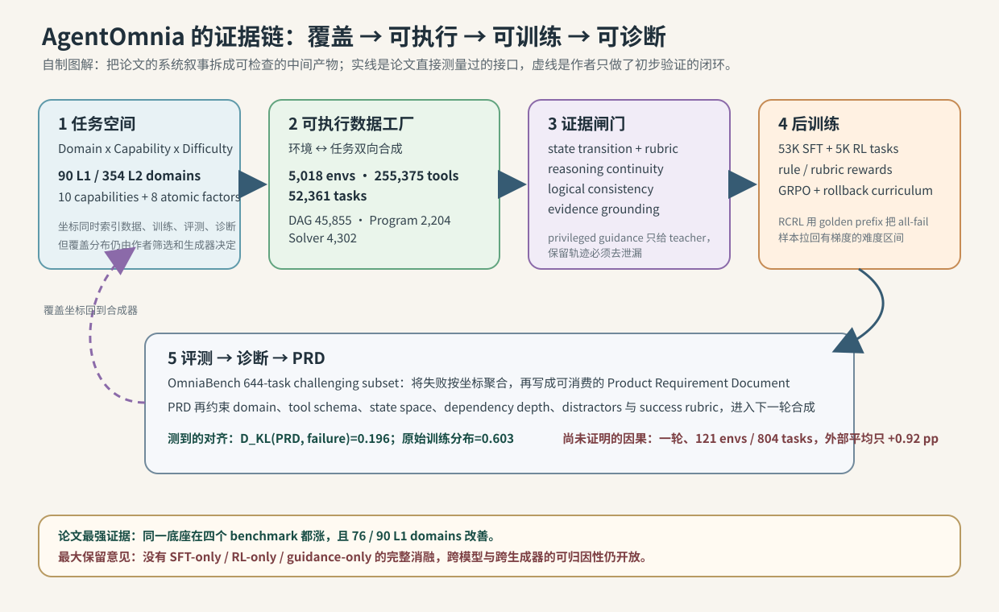
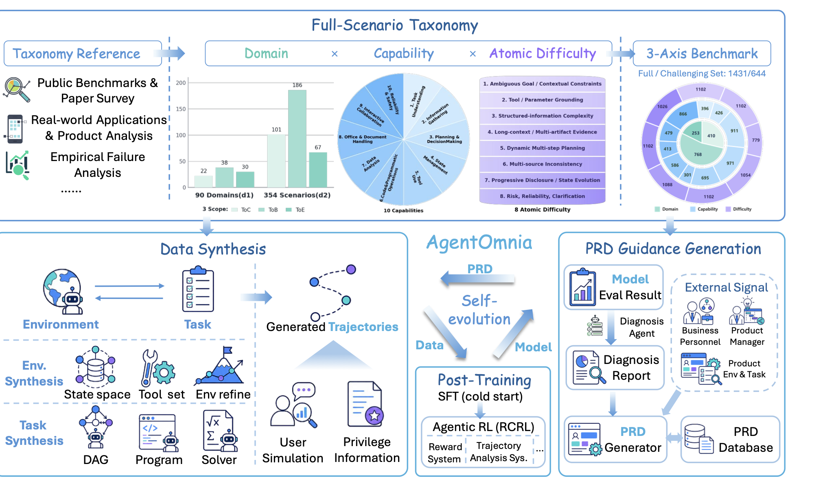
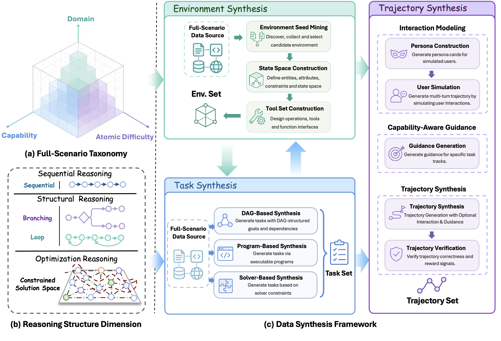
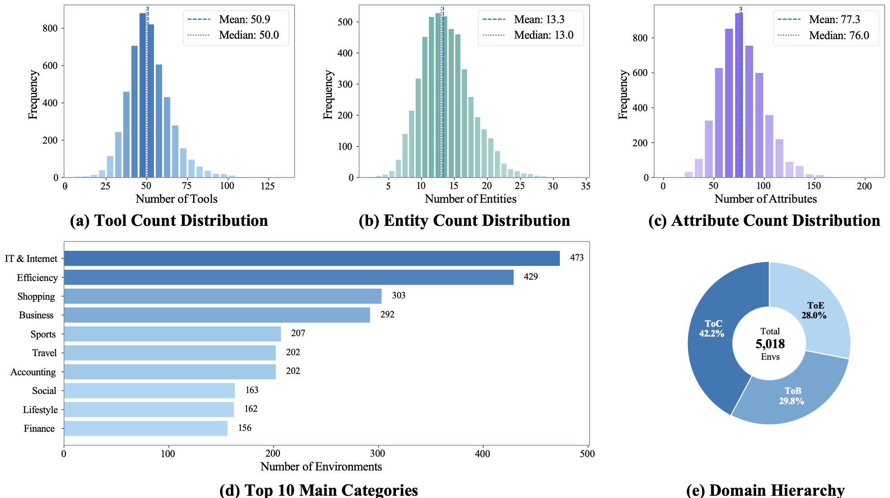
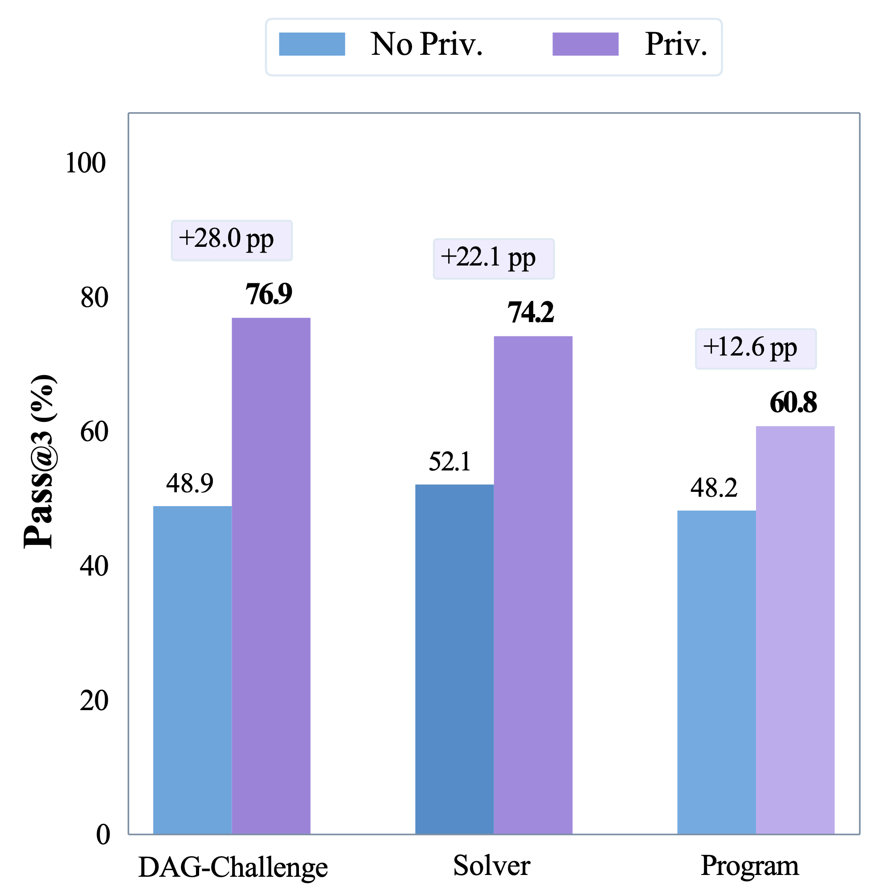
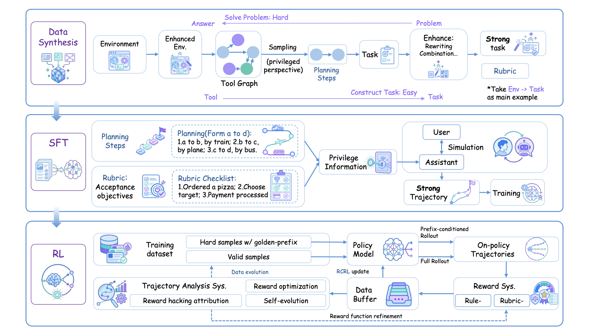
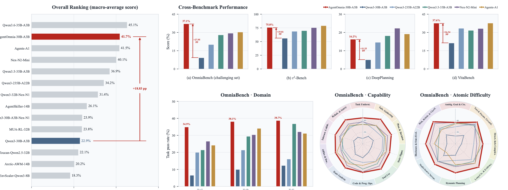
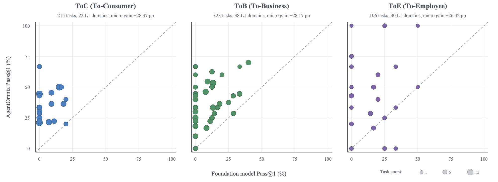
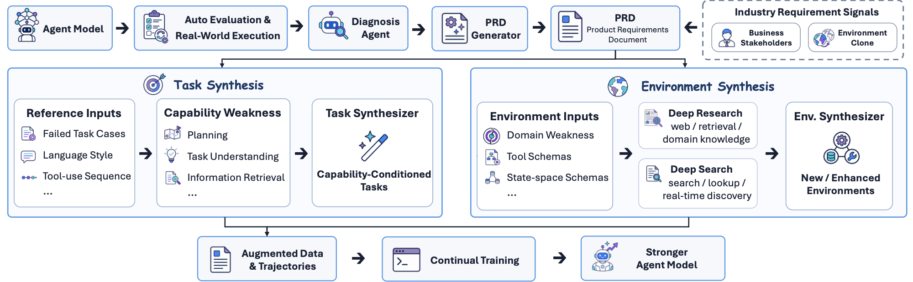
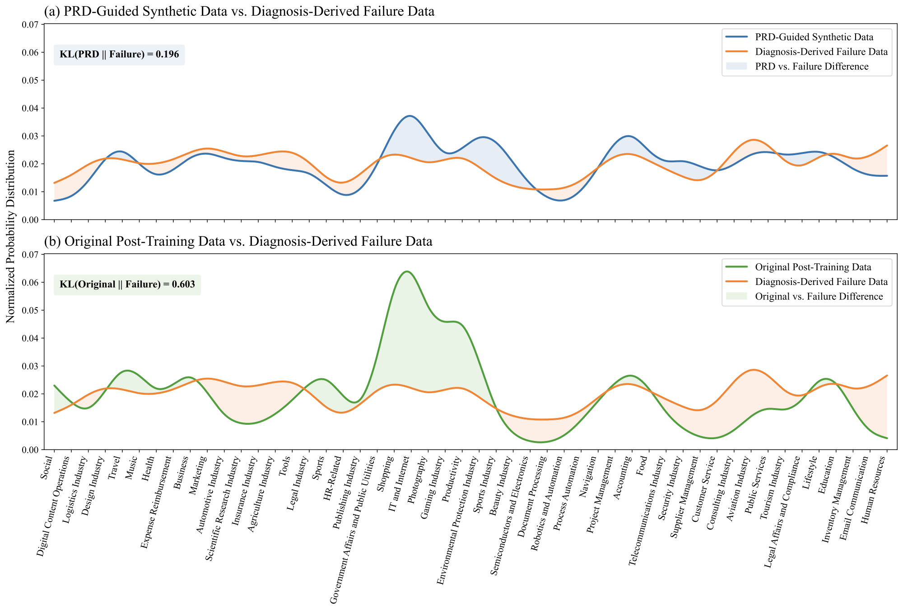

AgentOmnia：全场景 Agent 后训练的坐标系、数据工厂与 PRD 飞轮
- 论文：AgentOmnia: Scaling Agentic Models for Full-Scenario Applications
- 版本：arXiv v1，2026-07-28；69 页技术报告
- 作者：Huawei Cloud Post-Training Team；核心贡献者 Hao Jiang、Gangtao Xin、Yingdi Huang、Guojie Zhu、Jiangshan Zhang、Xinyuan Lin、Yunkun Xu、Chengyu Shen、Wenlong Fei、Jiawei Li、Yujie Fu、Sichen Kang、Tingyu Xie、Yedi Hu、Jingren Zhang、Hongcheng Gao、Jianshu Zeng、Chong Chen 等
- 类型：agentic post-training / executable data synthesis / full-scenario evaluation / self-evolution
- 关键词：full-scenario scaling、Domain × Capability × Atomic Difficulty、stateful environment、DAG/program/solver synthesis、privileged guidance、RCRL、PRD
读法：不要把它当成一个新算法
这不是一篇只提出一个 loss、换一个 sampler、然后在一个榜单上报 SOTA 的论文。它试图回答的是一个更工程化的问题：如何让 agent 的任务空间、可执行环境、训练信号、评测诊断和下一轮数据生产共享同一套坐标与接口。因此全文应该沿着“坐标系 → 环境/任务/轨迹工厂 → SFT/RL → 失败诊断 → PRD → 下一轮数据”的链路读，而不是把每个模块单独当成贡献。
我先画了一张证据链图，把论文的中间产物和证据强度放在一起：

自制图解，不是论文原图：实线表示报告中有直接测量的接口，虚线表示只做了一轮的初步闭环。最重要的阅读提醒是，论文最强的证据落在“同一底座经过整套数据工厂和后训练后变好”，而不是某个单独模块已经被隔离证明。
一句话判断
AgentOmnia 的真正创新是把 agent 后训练从“堆更多 tool-call traces”改写成一个有坐标的、可执行的、可回溯的生产系统：用 90 个一级领域、10 个能力维度和 8 个原子难度因素定义目标空间；用状态化代码环境、DAG/程序/求解器三条管线生产可验证任务；用 privileged guidance 让 teacher 越过自己的能力边界生成 SFT 轨迹；再用 SFT + 在线 agentic RL + rollback curriculum 训练 Qwen3-30B-A3B。结果很强且覆盖广，但模块之间没有完整的析因消融，PRD 自进化只有一轮、增益很小，所以它证明的是“整套 recipe 有效”，还不是“每个环节的因果贡献已被证明”。
先把数字钉住
| 论文声称 | 原文数字 | 我对它的解释 |
|---|---|---|
| 可执行环境 | 5,018 个；255,375 个 tools | 平均每个环境 50.9 个工具、13.3 个实体、77.3 个属性；这是代码合成后的保留集，不是 5,018 个真实生产系统 |
| 可执行任务 | 52,361 个 | DAG 45,855（Standard 43,851 + Challenge 2,004）、Program 2,204、Solver 4,302 |
| SFT / RL | 53K samples / 5K tasks | SFT 是验证过的轨迹；RL 在可 reset 的环境上在线 rollout |
| 主模型提升 | OmniaBench challenging 9.16% → 37.11% | Pass@1，固定 644-task 子集，+27.95 个百分点 |
| 跨 benchmark | macro 22.86% → 41.69% | OmniaBench、τ²-Bench、DeepPlanning、VitaBench 四者等权平均 |
| 覆盖广度 | 90 个 L1 domain 中 76 个上升 | 12 个不变、2 个下降；没有给置信区间或多次运行方差 |
| PRD 一轮 | 121 envs / 804 tasks | OmniaBench 37.11% → 38.49%；三个外部 benchmark 平均 43.22% → 44.14% |
四 benchmark macro 的算术也值得自己验一次：
\[\frac{37.11+75.79+16.25+37.62}{4}=41.6925\%, \qquad \frac{9.16+55.98+5.00+21.28}{4}=22.855\%.\]1. 问题定义：为什么需要 “full-scenario scaling”
作者观察到，agent benchmark 正从单轮问答走向有状态的 web、GUI、企业系统、文档、表格、服务 API 和长时规划；但每个 benchmark 只覆盖局部场景。两个模型可以有相同的总分，却在状态追踪、澄清、工具参数绑定、文件处理或错误恢复上完全不同。于是“总分上涨”没有告诉我们下一轮该造什么数据。
论文把目标域分成三种视角：
| Split | 含义 | 典型任务 |
|---|---|---|
| ToC (To-Consumer) | 面向消费者的服务和生活流程 | 购物、旅行、预约、支付、个人日程、售后 |
| ToB (To-Business) | 组织或行业业务系统 | 财务、采购、制造、物流、库存、CRM、IT 运维 |
| ToE (To-Employee) | 跨行业的员工工作 | 邮件、日历、文档、报表、审批、报销、知识管理、数据分析 |
关键转变是：先定义任务空间，再生成任务。每一个 task、environment、trajectory、rubric、verifier 都带同一个坐标：
\[Z=(\mathcal D,C,\boldsymbol\delta),\qquad \mathcal D=(s,d_1,d_2),\qquad \boldsymbol\delta\in\{0,1\}^{8}.\]其中 $s$ 是 ToC/ToB/ToE，$d_1,d_2$ 是两级领域，$C$ 是可以多选的能力集合，$\boldsymbol\delta$ 是可以组合的难度向量。统计时作者再从激活的难度中选一个 primary atom，避免一个任务在互斥柱状图里被重复计数。
三个轴分别测什么
| 轴 | 规模 / 例子 | 不应混淆的地方 |
|---|---|---|
| Domain | ToC 22 L1/101 L2；ToB 38/186；ToE 30/67 | 是“在哪种工作里”，不是能力本身 |
| Capability | Task Understanding、Information Gathering、Planning、State Management、Tool Use、Code、Data、Office、Collaboration、Reliability/Safety | 是“agent 会什么”，一个任务可以多标签 |
| Atomic Difficulty | 模糊目标、工具/参数 grounding、结构化信息、长上下文/多 artifact、动态规划、多源不一致、渐进披露、风险/澄清 | 是“在什么条件下难”，不是轨迹长度或 tool-call 数量 |
这个分离很有价值：例如“Office & Document Handling”是能力，“Long-context & Multi-artifact Evidence”是测试条件；同一个能力可以在不同领域和不同难度组合里被测。它也让失败可以从“某行业不行”细化为“跨实体证据分散导致 state management 失败”。
但坐标系不是自然常数。领域来自 app store、GDPval/行业分类和员工模板，能力是人工设计，原子难度来自内部数据失败分析，之后再由模型辅助整理和人审。它提供了索引与诊断语言，不自动保证每个格子样本均衡，更不保证“90 个领域”代表真实产品流量。Figure 3 的 t-SNE 只能检查语义簇和离群点，不能证明 taxonomy 的外部效度。
2. 总体框架：四个接口如何闭合

论文 Figure 2 原图（由官方源码 PDF 渲染为 PNG）：上部是三轴 taxonomy 和 1,431/644 的 OmniaBench，下部把 environment、task、trajectory 接到 SFT/RCRL，右侧把评测失败写成 PRD。图中“外部 signal”还允许业务人员和产品经理直接输入要求。
这张图最值得看的是箭头而不是图标：
- Taxonomy → Data：坐标先规定应该覆盖哪里、需要什么能力、难度怎样组合。
- Data → Model：环境和任务不是静态 prompt，而是可 reset、能读写状态、能给规则或 rubric reward 的运行时。
- Model → Diagnosis：OmniaBench 的失败按同一坐标聚合，task-level 分析再上升到 capability-level pattern。
- Diagnosis → PRD → Data：PRD 把失败原因翻译成新环境、新任务、新轨迹的约束；产品侧也可以用同一格式输入需求。
论文把这四个模块包装成“closed development loop”，但要注意闭环的两种含义：数据流闭合（确实可以从失败生成下一批样本）已经展示；能力自动持续上升只在一轮小实验里初步展示。
3. 数据工厂：环境、任务、轨迹三层分开造

论文 Figure 4 原图：左侧 taxonomy 同时覆盖三种 reasoning structure，中央是环境与任务的双向合成，右侧是 user simulation + capability-aware guidance + trajectory verification。它说明作者把“任务难”拆成 sequential、structural、optimization 三种可操作结构，而不是只拉长上下文。
3.1 Environment：从 seed 到代码状态机
环境定义为 $E=(\mathcal S,T)$；工具 $t$ 接收状态和参数，返回新状态与 observation：$t(s,x)=(s’,o)$。环境 seed 来自四类来源：
| Seed | 数量 | 作用 |
|---|---|---|
| Query seeds | 197K | 公网页面上的用户意图和需求 |
| Skill definitions | 20K | 高层能力和使用场景 |
| MCP specifications | 2.3K | 工具定义与接口描述 |
| API seeds | 1.3K | 真实 API 的功能和调用样式 |
生成器先做两轮 deep research，写出实体、属性、关系和约束，再编译成 Python state containers；接着从 state schema 生成 query/mutate tools，经 validator 去重、拆分、合并、重写，最后编译成统一返回协议的可调用方法。验证分三层：初始化能否加载，单工具是否按语义改变状态，工具组合是否破坏全局 invariant。多次修复仍失败的环境直接丢弃。

论文 Figure 6 原图（由官方源码 PDF 渲染为 PNG）：用来读分布而不是读“有多少”这一个 headline。工具数均值 50.9、实体 13.3、属性 77.3，环境覆盖 ToC 42.2%、ToB 29.8%、ToE 28.0%。这是一座代码化的 synthetic sandbox，稳定性和并发性优于真实 API，但 realism 仍取决于 seed、schema 和 validator 的质量。
环境数量的精确统计以正文 Table 5/Figure 6 和上表为准；不要把环境分布百分比误当成任务或评测集的分母。
3.2 Task：三种结构覆盖三类推理
| 管线 | 数量 | 生成对象 | 正确性锚点 | 我认为的边界 |
|---|---|---|---|---|
| DAG-Standard / Challenge | 43,851 / 2,004 | 工具依赖图 + 虚拟中间节点 + 初始状态 + 自然任务描述 | 执行轨迹、终态、task/rubric 一致 | 结构像长链，但未必等于真实工作流；Challenge 只是在既有环境里加深依赖、状态和间接描述 |
| Program-based | 2,204 | 带 loop、branch、数据依赖的 executable solution program | 程序运行、结构化 ground truth、verifier、rubric | 程序是参考解，不代表 agent 必须走同一路径；程序生成/修复成本与分布未报告 |
| Solver-guided | 1,848 | solver-aware schema，LLM 自己求解/验证 | schema-guided LLM rubric | 最优性保证弱，允许“等价或更优”答案，但 reference 仍可能错 |
| Solver-anchored | 2,454 | 真实 solver 先产出 trusted artifact，再反推任务与环境 | solver status、objective、optimal solution、约束 rubric | 正确性最强，但每个新领域都要先工程化 solver，扩展性换来工程成本 |
DAG 管线的关键细节是工具依赖不是简单共现：边分为 parameter dependency、entity-anchor dependency、state-transition dependency；虚拟节点只做 COMPUTE/LOGIC/EXTRACT/TRANSFORM/AGGREGATE/VALIDATE/FILTER 七类中间操作，不可被 agent 直接调用。生成后允许辅助 search/read/verify 调用不出现在用户描述中，但核心状态变化必须被描述或逻辑蕴含，且 rubric 不强迫复现 reference tool order。
Program 管线的关键细节是先联合生成内部 task spec 和 solution program，再从已验证程序重写 public query，移除 tool ID、API signature、显式执行顺序和参数 key 暗示。这是对“训练数据把答案写进 prompt”的正面处理。
Solver 管线提供一个很有用的可信度梯度：隐式方案更容易扩展却让 LLM 判 optimality，显式方案牺牲领域扩展速度换取真实 solver artifact。论文把两者合并统计，但没有给出各自对最终模型的独立增益。
3.3 轨迹：让 teacher 借到能力，但不把答案泄露给 student
用户侧用 persona 模拟 request granularity、信息完整度和不一致/误导细节；teacher 侧按失败类型注入两类 privileged guidance：
- Planning-oriented：给高层分解、搜索策略、约束检查提示，适合 solver 任务的深度探索。
- Outcome-oriented：给目标状态、rubric checklist、完成约束，适合 DAG-Challenge/Program 的执行细节遗漏。
中间 reasoning、action、observation 仍必须通过环境自然生成；teacher 被要求隐式使用 guidance，不显式说出隐藏信息。之后按 task correctness、reasoning continuity、logical consistency、evidence grounding 四道门筛轨迹。

论文 Figure 14 原图：在完整 verification pipeline 下，DAG-Challenge 的 verified Pass@3 从 48.9% 到 76.9%（+28.0pp），Solver 从 52.1% 到 74.2%（+22.1pp），Program 从 48.2% 到 60.8%（+12.6pp）。它证明 guidance 能提高“造出合格轨迹”的概率，不等于证明 student 一定学到同样的能力。
论文还单独检查了 grounding，结果反而暴露了最需要警惕的地方：
| Synthesis setting | DAG-Challenge | Solver | Program |
|---|---|---|---|
| 无 privileged guidance | 95.84% | 98.00% | 98.45% |
| 有 privileged guidance | 94.28% | 92.01% | 97.00% |
| 变化 | -1.56pp | -5.99pp | -1.45pp |
也就是说，guidance 带来的 Pass@3 提升和 evidence grounding 的下降同时存在，Solver 最明显。作者称保留集仍“high grounding”，但这不是无泄漏的证明：grounding 判定标准、抽样规模、judge 的人工校准和对抗性泄漏测试都没有给出。我的读法是：privileged guidance 是有效的 data-generation scaffold，也是一个潜在的 hidden-state distillation 通道，两面必须一起报告。
4. 后训练：SFT 负责启动，RCRL 负责把难题拉回可学习区

论文 Figure 15 原图：上半段从 enhanced environment 采样“easy to verify, hard to solve”的任务，用 planning/outcome guidance 造 strong trajectories 做 SFT；下半段用 rule/rubric reward 做 full rollout，并对 all-fail 样本使用 golden-prefix 的 prefix-conditioned rollout，再由 trajectory analysis 做 reward refinement 和 data evolution。
SFT 配方
- Format validation：检查 tool call 可解析、函数名存在、参数符合 schema。
- Convergence-aware budgeting：各轨迹来源单独 fine-tune，看 validation curve 到稳定所需的样本量，再按“收敛需求”分配混合预算；最终 53K SFT instances。
- Context alignment：多轮轨迹只保留最后一个 user query 对应的 reasoning，去掉早期 assistant turns，模拟 inference-time context。
实现细节相对完整：AdamW、global batch 128、最大 64K tokens、cosine decay、2% warmup、learning rate $2\times10^{-6}\to1\times10^{-6}$；tool-response tokens 被 mask，因为它们由环境提供而不是模型生成。
RL 与 reward
RL 数据从 SFT checkpoint 的 Pass@K 估难度，只采 $[0\%,80\%]$ 区间并均匀分层，保留 10%-20% 与 SFT 的重叠作为防漂移正则，得到 5K tasks。reward 同时有：
- rule-based：schema、字段抽取、精确/模糊匹配；
- rubric-based：长时行为和任务特定操作逻辑；
- 两类在实验中都变成二值 ${0,1}$，执行失败时 router 可回退到 LLM judge。
作者没有只用 accuracy 选 reward model，而是测五个 RL-specific 维度：advanced-vs-basic rubric reliability、组内 Kendall tau-b 排序、advantage 方向（FPR/FNR）、advantage magnitude、重复评分 consistency。这个设计抓住了一个常被忽略的事实：reward model 只要把组内好坏排序颠倒，哪怕总体 accuracy 看着不错，也会把 policy gradient 推向反方向。
RCRL 的核心机制
标准 GRPO 在足够难的 agent task 上会遇到整组 rollout 全为 0，advantage 没有方向。RCRL 给每个 task 配一条 golden trajectory，并维护已暴露的 prefix turn 数 $P_q$：
\[\mathcal L_{\mathrm{RCRL}}(\theta)=\lambda_{\mathrm{CE}}\mathcal L_{\mathrm{SFT}}(\tau^*_{\le P_q})+\lambda_{\mathrm{RL}}\mathcal L_{\mathrm{GRPO}}(\tau_{>P_q}).\]首轮若一组平均 reward 为 0，就粗粒度增加 prefix（约 golden trajectory 的 20%）再 rollout；之后根据平均 reward 相对阈值的高低逐轮缩短或延长 prefix：太容易就大步缩短，接近阈值就小步缩短，太难就延长。于是 curriculum 不是按全局 task difficulty 排序，而是每个 prompt 有自己的可学习区间。
工程上还做了几件会显著改变结果的选择：去掉 KL 和 entropy regularization；ratio 的分母用 inference engine 的 raw behavior policy；做 expert routing replay；rollout 用 top-p=1；直接拼接 token，修正 training-inference mismatch；asymmetric clipping 为 $\epsilon_{low}=0.2,\epsilon_{high}=0.28$，每批 64 tasks、每题 8 rollouts、temperature 1.0。
RCRL 的直觉很漂亮，但证据链不完整：论文没有把“无 rollback 的 GRPO”“只有 prefix、不做 RL”“有 KL”“无 routing replay”等因素拆开报告。因此不能把 41.69% 的提升全部归因于 rollback curriculum；它更像整套 systems alignment 的合取结果。
5. 主结果：广度确实涨了，但不是全局 SOTA

论文 Figure 1 原图：红色 AgentOmnia 在 OmniaBench、τ²-Bench、DeepPlanning、VitaBench 分别为 37.1%、75.8%、16.2%、37.6%，相对 foundation 的增益为 +27.95、+19.81、+11.25、+16.34pp；左侧 macro-average 41.7% 仅是在可比 agentic post-trained 组中最高，不是所有模型最高。
四 benchmark 读表
| Model | OmniaBench (644) | τ²-Bench | DeepPlanning | VitaBench | 4-way macro |
|---|---|---|---|---|---|
| Qwen3-30B-A3B foundation | 9.16 | 55.98 | 5.00 | 21.28 | 22.86 |
| AgentOmnia-30B-A3B | 37.11 | 75.79 | 16.25 | 37.62 | 41.69 |
| Agents-A1 | 30.28 | 78.96 | 19.17 | 37.66 | 41.52 |
| Nex-N2-Mini | 29.35 | 75.42 | 22.29 | 33.19 | 40.06 |
| Qwen3.6-35B-A3B | 37.27 | 87.27 | 24.17 | 31.88 | 45.15 |
| GPT-5.5 (xhigh) | 57.61 | 86.94 | 72.50 | 57.19 | 68.56 |
这张表要同时读三层：
- 相对同底座的提升很大：四项都涨，说明不是只对 OmniaBench 过拟合。
- 相对同代 agentic baseline 是竞争力而非统治：Agents-A1 在 τ²/DeepPlanning 更强，Nex-N2-Mini 在 DeepPlanning 更强；AgentOmnia 的优势主要是 OmniaBench 和综合均值的窄领先。
- 不能说“超过所有模型”：Qwen3.6-35B-A3B、DeepSeek-V4-Pro-Max 和 proprietary frontier 仍然更高；AgentOmnia 超过的是 Qwen3-235B-A22B-Thinking-2507 这一组四项，且比较仍受底座、推理预算和部署配置影响。
评测协议并不完全同质：作者优先使用本地 unified reruns，缺失时保留 leaderboard snapshot/source-reported 值；外部 benchmark 的 user simulator 是 2026 年 6 月快照中的 DeepSeek-V4-Flash、关闭 thinking。这个披露是优点，但也意味着跨行比较不能当成严格 controlled experiment。
细粒度广度：76 / 90 不是“每个格子都可靠”

论文 Figure 17 原图：每个点是一个 L1 domain，横轴 foundation Pass@1，纵轴 AgentOmnia Pass@1，点面积是任务数；ToC 215 题、ToB 323 题、ToE 106 题。大多数点在对角线之上，但左侧大量 foundation≈0 的点会把“提升”与“从零开始”混在一起。
按 split 的绝对分数是 ToC 6.51%→34.88%（+28.37pp）、ToB 9.91%→38.08%（+28.17pp）、ToE 12.26%→38.68%（+26.42pp）。按 capability，最大增益是 Reliability & Safety +36.77pp，最小是 Code & Programmatic Operations +25.00pp；按 atomic difficulty，Long-context & Multi-artifact Evidence +47.73pp 最大，Multi-source Inconsistency +21.43pp 最小。
这些分布支持“不是单一类别特化”，但不能直接推出“普遍可靠”：论文没有报告每个点的置信区间、跨 seed 方差、任务级 bootstrap，ToE 的 106 题分散在 30 个 L1 domain 上，很多点样本很小。更关键的是绝对分数仍低：Ambiguous Goal & Contextual Constraints 只有 37.04%，Multi-source Inconsistency 只有 50.00%。失败坐标已经告诉我们下一轮该造什么，但还没有告诉我们真实用户是否会同样受益。
6. PRD 自进化：可控性有信号，递归改进还没被证明

论文 Figure 16 原图：模型先在自动评测或真实执行中失败，diagnosis agent 写 task-level / capability-level report，PRD generator 把失败轨迹、语言风格、工具序列和行业需求变成结构化要求，再分别约束 task synthesizer 与 environment synthesizer，训练出下一版模型。
PRD 不是普通 prompt，而是一个带接口合同的中间 artifact。核心规格规定 scenario、required behavior、success condition；可选 guidance 记录失败证据和合成约束，例如“至少三层 tool dependency”“注入多个候选 ID”“模拟资源不可用”“把显式 literal 改成代称”。这使内部评测失败和外部产品经理需求可以进入同一个数据管线。
先验证“有没有打到失败分布”

论文 Figure 18 原图：PRD-guided synthetic data 与失败任务的 L1 domain 分布更接近，$D_{KL}(P_{PRD}|P_{failure})=0.196$；原始 post-training data 对失败分布的 KL 是 0.603。这个实验测的是 target alignment，不是能力提升，且图只展示 top 50 domains。
KL 下降说明 diagnosis → PRD → synthesis 的路由确实改变了数据分布；它不能证明分布更像失败就一定更能修复失败，也不能排除 generator 只是复制了 failure labels。把它当“可控性指标”是合适的，把它当“自进化已经成功”则过度解读。
一轮模型结果
| Model | OmniaBench | τ²-Bench | DeepPlanning | VitaBench | 外部三项平均 |
|---|---|---|---|---|---|
| AgentOmnia | 37.11 | 75.79 | 16.25 | 37.62 | 43.22 |
| AgentOmnia-evo | 38.49 | 77.48 | 17.08 | 37.87 | 44.14 |
| 变化 | +1.38 | +1.69 | +0.83 | +0.25 | +0.92 |
这是一条诚实但很弱的 positive signal：外部 benchmark 没参与 target construction，因而有 transfer 意味；但只有一轮、121 个环境和 804 个任务，没有同规模随机 PRD/control、没有多轮曲线，且细项有回落（例如 VitaBench In-store 48.63→47.75）。论文自己也把它称为 preliminary。
7. Heilmeier 式追问：到底证明了什么
| 追问 | 我的回答 |
|---|---|
| 做什么？ | 让 agent 在 ToC/ToB/ToE 的异构、有状态、长时工具任务上得到可扩展且可诊断的后训练，而不是只在局部 benchmark 上涨分。 |
| 新在哪里？ | 不是 DAG、程序、solver、privileged distillation、GRPO 或 PRD 中任何一个单点；新的是把它们放进同一坐标系和闭环，并把环境/任务/轨迹都做成可执行 artifact。 |
| 比已有方法好在哪里？ | 相对同底座 Qwen3-30B，四 benchmark 全涨；相对可比 agentic post-trained baselines，OmniaBench 和四项 macro 领先；taxonomy 还能给出“哪里涨、哪里没涨”。 |
| 证据够不够？ | 足以支持整套 recipe 的工程有效性；不足以分离 SFT、RL、RCRL、privileged guidance、reward calibration 各自的因果贡献。 |
| 代价是什么？ | 5,018 个代码环境、255K 工具、52K 任务、53K SFT + 5K RL，外加 solver、sandbox、异步 judge、轨迹分析和大量修复；这是系统工程，不是轻量技巧。 |
| 什么会推翻它？ | 在新底座、留出领域、真实 API/GUI 或人类专家评测上，提升消失；或完整 factorial ablation 显示主要增益来自 benchmark 对齐/数据规模而不是闭环设计。 |
最大的因果疑点：整套系统一起变，无法知道谁在起作用
主结果只比较 foundation 与最终 AgentOmnia。最终模型同时经历了：privileged trajectory synthesis、53K SFT、5K RL、二值 rule/rubric reward、无 KL、asymmetric clipping、routing replay、training-inference correction、RCRL 和 trajectory analysis。没有至少以下对照：
- foundation → SFT-only；
- SFT → 普通 GRPO（无 rollback）；
- SFT → RCRL（无 privileged guidance）；
- 有/无 rule reward、rubric reward、reward-model calibration；
- 有/无 taxonomy/PRD conditioning；
- 同数据量的真实 API、非 PRD synthetic、随机采样 control。
因此“AgentOmnia”更像一个系统级 treatment。这不削弱它作为工程报告的价值，却要求读者把论文里的“contribution”理解为接口设计和生产管线，而不是已经完成的模块级科学归因。
合成环境的真实性与 verifier 的闭环风险
代码环境解决了真实 API 的成本、权限、速率限制和不可重复问题，也让 state transition、solver artifact、rubric 能自动检查；但它把风险转移到 seed selection、state schema、tool implementation 和 verifier。论文提到 initialization/tool/environment 三层自修复和 reward-hacking audit，却没有给：
- 环境保留率、每层修复次数、失败类型分布；
- 真实应用/真实 API 的 holdout 对比；
- rubric/judge 与人类专家的一致率、置信区间；
- 对“模型恰好匹配答案但没有证明最优”“伪造价格再声称已验证”等 reward-hacking 案例的定量前后变化。
尤其是 implicit solver-guided 仍让 LLM 产生 ground truth/optimality 判断，explicit solver-anchored 才有真正的 solver artifact。把两者合并在 4,302 个 solver tasks 的 headline 里，会掩盖 correctness guarantee 的异质性。
Privileged guidance 的双刃剑
Pass@3 的提升很醒目，但 grounding 结果是反方向：DAG 95.84%→94.28%，Solver 98.00%→92.01%，Program 98.45%→97.00%。这说明“teacher 能不能借助隐藏提示做出正确轨迹”和“student 可见证据是否足以支持这条 reasoning”是两个不同指标。Solver 下降近 6pp 不是可以略过的小噪声；它提醒我们把 privileged guidance 当作受约束的蒸馏通道，而不是免费的 stronger teacher。
更严格的验证应包含：逐步 evidence attribution、隐藏提示对照、人工 blind review、对抗性 prompt（诱导 teacher 引用不可见状态）、以及 student 只看保留轨迹时的 held-out transfer。当前报告只给总体 pass rate，没有这些切片。
评测广度的统计陷阱
76/90 domain 上升是好信号，但 scatter 中很多 foundation 点接近 0，提升有“从 0 到可用”的地板效应；点大小差异也很大。ToC/ToB/ToE 的任务数是 215/323/106，不均衡；作者报告的是 task-level micro pass rate，taxonomy 图同时又让人关注 domain-level breadth。没有 bootstrap CI、不同随机 seed、pass@k 曲线或人类效用指标，不能把 37.11% 读成稳定的生产成功率。
此外，OmniaBench 与 AgentOmnia 共享 taxonomy、部分 synthesis methodology，虽然训练任务做了 deduplication，仍可能共享 generator prior；所以 external τ²-Bench、DeepPlanning、VitaBench 的上涨更能支持泛化，但这些 benchmark 也使用固定的 user simulator / adapter / inference budget。作者把 source-reported 与 unified rerun 分开标注，是对这一问题的诚实处理；读者仍应避免跨表直接排位。
PRD 不是 magic self-improvement
PRD 的价值在于把失败压缩成可读、可审查、可消费的 specification，连接工程团队和数据生成器；它不是模型自己凭空“发现新能力”。当前一轮实验的 +1.38pp（OmniaBench）和 +0.92pp（外部平均）更像证明 protocol 可控、方向正确。要称为 recursive self-improvement，至少还需要：
- 多轮迭代曲线，含 held-out domain 和 regression suite；
- 随机 PRD / 人工 PRD / 不带 PRD 的同预算 control；
- 每轮失败分布、数据重复率、能力迁移与遗忘；
- PRD diagnosis 的人类校准和跨模型一致性。
8. 我会如何复现与改进这个实验
若目标是研究而不是复刻 Huawei 的全部基础设施，我会把最小可复现版本拆成四个可独立验收的阶段：
- 先做坐标与 held-out split：固定 Domain/Capability/Difficulty schema，按领域留出一部分任务，防止 taxonomy 与 benchmark 共用生成先验。
- 只用一个小型状态化环境：同时实现 DAG、program、solver 三种 task，所有成功标准先用 deterministic state assertions，再叠 rubric judge。
- 做 factorial post-training：foundation、SFT、SFT+GRPO、SFT+RCRL、privileged/no-privileged 五个条件，报告 pass@1、pass@k、trajectory length、tool errors、grounding 和成本。
- 最后接 PRD：diagnosis 报告必须链接到失败轨迹中的证据；PRD 生成后先做分布对齐，再用新领域和 regression suite 验证，不把 KL 下降当成能力提升。
这套顺序也给 agent 数据管线一个很实用的原则：先让“任务为什么算成功”可执行，再让“怎么生成更多任务”规模化；先把失败归因到坐标和组件，再谈自动自进化。
对我的价值
AgentOmnia 对 paper-reading / agent harness 的直接启发，不是照抄 5,018 个环境，而是把一篇笔记也当成一个可审计 artifact：
| AgentOmnia 概念 | 可迁移到阅读管线的做法 |
|---|---|
| Taxonomy coordinate | 每篇论文同时标注问题域、能力/方法、难度或证据类型，避免只按标题归档 |
| Executable task + rubric | 关键数字必须能回到页码、表格或原图；结论和证据分栏 |
| Privileged guidance | 可以用外部检索辅助理解，但最终笔记要区分论文可见证据与我的推断 |
| Trajectory analysis | 失败阅读不是“没看懂”，而是记录卡在哪个 section、哪个定义或哪个对照 |
| PRD loop | 把“最大疑点”转成下一轮复现/查证的具体任务，而不是泛泛写 limitations |
| RCRL | 难点先用可验证的中间 prefix 拆开，再逐步减少脚手架；但要有 no-scaffold regression |
最后一句
AgentOmnia 把 agent 后训练最难的一件事说清楚了：规模不是把轨迹数量乘大，而是把任务空间、状态、正确性、训练和失败诊断放进同一条可执行管线。 这篇报告已经有很强的工程证据——同一底座跨四个 benchmark 广泛提升——但“PRD 驱动的递归自我改进”和各组件的独立因果，仍然是下一篇实验而不是本文已经证明的结论。